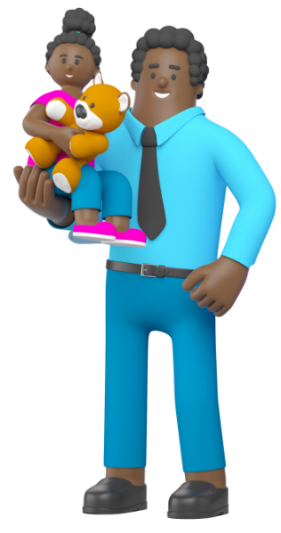

-
אני ילד/ה
הגעת לאתר הדרכה של האירדוק, מכשיר שיעזור לך להתגבר על הכאבים באוזניים. יכול להיות שהכאבים מקשים עליך בלימודים או עם חברים, ואנחנו כאן כדי לעזור. לא לשכוח לקרוא למבוגר/ת אחראי/ת בעת השימוש במכשיר
-

-

-
בעיות אוזניים נפוצות אצל ילדים וילדות
בגילים קטנים בעיות האוזניים העיקריות הם דלקת האוזן התיכונה ונוזלים באוזניים, שכדי לטפל בהם נדרש לקחת תרופות או לעבור ניתוח כפתורים. התסמינים יכולים להיות: כאבים באוזניים, ירידה בשמיעה, קשיי שיווי משקל, חום ונזלת. האירדוק יכול להוות תחליף לניתוח כפתורים או להקל על הכאבים לקראת הניתוח, משום שהוא עוזר לנקז את הנוזלים באוזניים.
תכירו את האירדוק
תוכלו לסובב את המכשיר וללחוץ על הנקודות השונות כדי להכיר את מבנה האירדוק
- 
-
להורים
לפני השימוש באירדוק, חשוב להכין את ילדכם בצורה נכונה. התחילו בהצגת המכשיר לילדכם ואפשרו לו לגעת בו, כדי שירגיש את הרטט העדין שהוא מפיק. הסבירו לילדכם שהאירדוק אינו מפחיד ולא מזיק. בנוסף, תוכלו להראות לילדכם את הסרטונים של ילדים אחרים המשתמשים באירדוק, כדי שיבינו שמדובר במכשיר ידידותי ומוכר.